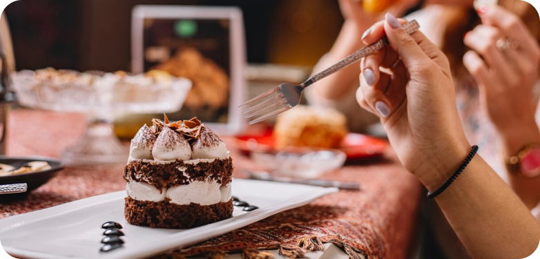
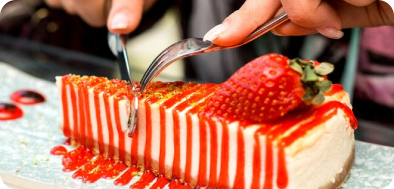

Our Blog
Explore the latest dessert trends that are revolutionizing the world of sweet treats, offering guests unique and unforgettable indulgences that redefine the dessert experience. From artisanal creations to cutting-edge techniques, discover the trends that are setting the dessert scene abuzz.
1. Artisanal Ice Cream Sandwiches: Indulge in the nostalgic charm of artisanal ice cream sandwiches, featuring gourmet ice cream flavors sandwiched between freshly baked cookies, brownies, or even donuts for a decadent twist on a classic treat.
2. Interactive Dessert Stations: Delight guests with interactive dessert stations that allow them to customize their sweet creations, from build-your-own donut bars to DIY sundae stations complete with an array of toppings, sauces, and decadent garnishes.
3. Gourmet Mini Desserts: Embrace the trend of mini desserts that pack a powerful punch of flavor in a petite package, offering guests the opportunity to sample an assortment of indulgent treats without committing to a single large dessert.
4. Global Flavors and Influences: Explore the world of desserts through global flavors and influences, incorporating exotic ingredients and traditional techniques from around the globe to create unique and memorable sweet creations that transport guests on a culinary journey.
5. Vegan and Plant-Based Desserts: Embrace the growing demand for vegan and plant-based desserts by offering a variety of dairy-free, egg-free, and plant-based options that cater to guests with dietary preferences and restrictions, including decadent vegan cakes, cookies, and cheesecakes.
6. Creative Flavor Combinations: Push the boundaries of flavor with creative combinations that surprise and delight the taste buds, from unexpected pairings like sweet and savory to innovative flavor infusions like matcha, yuzu, and lavender.
7. Decadent Dessert Cocktails: Elevate the dessert experience with decadent dessert cocktails that combine the best of both worlds, blending premium spirits with sweet ingredients like chocolate, caramel, and fruit to create indulgent libations that satisfy the sweet tooth.
8. Instagram-Worthy Creations: Create desserts that are as visually stunning as they are delicious, with Instagram-worthy creations that beg to be photographed and shared on social media, from elaborate cake towers to whimsical dessert displays.
9. Health-Conscious Options: Cater to health-conscious guests with guilt-free dessert options that prioritize wholesome ingredients and mindful indulgence, including gluten-free, sugar-free, and paleo-friendly desserts that offer a healthier take on classic favorites.
10. Innovative Dessert Techniques: Experiment with innovative dessert techniques that push the boundaries of traditional pastry arts, from molecular gastronomy-inspired creations to avant-garde plating techniques that transform desserts into works of art.
